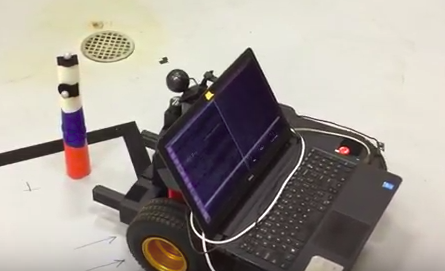
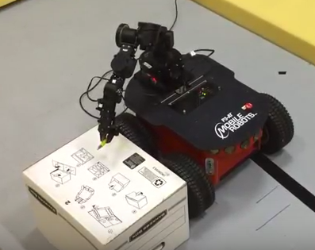
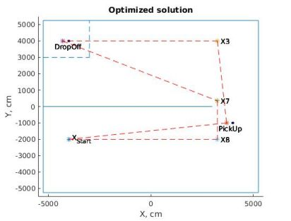
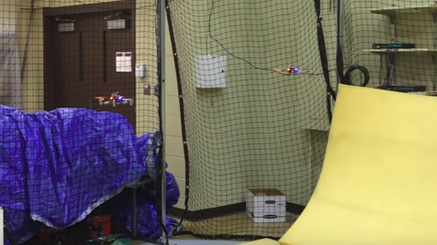

Files from my projects
Primitive actions for a Ground Robot ("Pick up" and "Drop Off" objects based on camera) (implemented in C++):

- Implemented primitive actions in C++ for a ground robot, using a web camera and OpenCV2 for object recognition (e.g. videos: “Pick Up an object” - approach to a certain distance to the object and pick it up, “Drop Off an object” - drop off an object and reverse back to a certain distance from the object, as well as "Camera Calibration" primitives)
- These "primitives" are supposed to be used by an Integrated Task and Motion Planning algorithm as primitives for high-level solution (it should decide which primitives should be activated and when).
- Source code: ActPickUpCam.zip (request the password via email)
- I used the object recognition technique based on color from this tutorial. Here is the source code for the tutorial: ObjectTrackingTut.cpp
-
- Basically, the picking up an object based on a camera consist of 3 components: 1. Gripping Behavior - for gripping an object once it is close enough (highest priority). 2. Rotational Behavior to keep robot rotating to find an object. 3. Linear Behavior - robot will be approaching towards an object as long as Gripping and Rotational Behaviors are not submitting commands.
-
- I used a "IndoorGPS.a" library for getting indoor localization information from infrared cameras, which track the position of the robot via reflections from the markers. The robot was using GPS to find the object if it is not detected by sensors.
-
- Dependencies: your machine should have ARIA, ARNL installed
- The most interesting files: ExampleCam.cpp (initialization of objects for robot, camera and activating Behaviors etc), ActPickUpCam.cpp, ActPickUpCam.h (decription and implementation of Behaviors), VideoProcessing.cpp, VideoProcessing.h (video processing)
PioneerArmDemo (implemented in C++):

- Implemented APIs for "initialization" and "moving the robot arm" for a 7 DoF manipulator (Cyton Gamma 1500) and implemented few demos (e.g. video: “picking up an object”).
- Source code: PioneerArmDemo.zip (request the password via email)
-
- The future plan was to provide vectors of coordinates for all 7 degrees of freedom, generated by The Open Motion Planning Library, which is a library with sampling-based motion planning algorithms (example: Optimal Path Planning with sampling-based approaches).
-
- The path planning algorithm were supposed to run in simulated environment in Gazebo simulator, solving Integrated Task and Motion Planning problems (similar to the code below implemented for Ground Robots)
-
- Dependencies: your machine should have installed libraries for the Cyton Gamma 1500
- The most interesting files: PioneerArmDemo.cpp, PioneerArmDemo.h (implementation of the class, instantiating a PioneerArm object, sending demo angles)
Optimized Integrated Task and Motion Planning (implemented in C++):

- Presentation with details: presentation on May 2, 2017
- Source code: Optimized_ITMP.zip (request the password via email)
-
- Implementation of a similar project (non-optimized ITMP): Video with implemented Integrated Task and Motion Planning. We used Omron Pioneer Robots for the implementation.
- Basically, this code uses CPLEX to find an optimal solution for an Integrated Task and Motion Planning problem via Mixed Integer Linear Progreamming. The Mission is given in a form of a Linear Temporal Logic (and particularly in Counter Linear Temporal Logic over Constraint System, which is a flavor of LTL). The output is a sequence of "Primitives", execution of which will lead to accomplishing the Mission
- There are 3 pieces for making OptWarehouse: WarehouseScene.o (done by my labmate for another project), OptWarehouse.o (done by myself), AuxFunctions.o (done by my labmate for another project)
- The mission is given as: "RpO(1);RdOaW(1,(and (= x -4000) (= y 4000));Rh" (Robot's initial position is at 1; Object 1 should be moved to coordinates -4000,4000; Return Home)
- I implemented only operators: Next, Until, Negation. But, operators Eventually (neg Always neg phi), Always (true Until phi), Last (not true until the last time step) can be implemented using Next, Until and Negation.
- Optimized Manhattan norm (sum of projections to X and Y)
- Each primitive (GoTo, PickUp, DropOff) are described as a set of constraints, e.g. during using primitve GoTo the robot should be on Left, Right, Up or Below from each obstacle and walls
- Each state variable defined in the CLTLB(D) specification is encoded as a vector of variables in the CPLEX solver with a planning horizon K.
- Dependencies: your machine should have CPLEX installed (version 12, release 6, CPLEX)
- The most interesting files: OptWarehouse.cpp, OptWarehouse.h (done by myself; declaring constraints for the primitives, setting optimization goals), WarehouseScene.cpp, WarehouseScene.h (done by my labmate; initialization of the environment: boundaries, walls, objects)
Mission level control for drones (implemented in C++):

- Implemented mission level control for AutoQuad M4 drones with another graduate student. Video with 2 Autoquad M4.
- Source code: AutoQuad_M4.zip (request the password via email)
- We used middleware ROS (Robot Operating System) for implementing nodes, sending messages, etc.
- We modified firmware of the drone (written in C) to receive indoor GPS from the infrared cameras and made other changes.
- Dependencies: your machine should have ROS Indigo installed
- The most interesting files: optitrack_pub/main.cpp (here ROS node "pub" advertizing localization data to the topic "optitrack/pos"), M4/main.cpp (initializes ROS node, which receives localization and mission commands and republishes this data to serial port), M4/mission.cpp (takes care of receiving, decoding and republishing mission messages into a serial port), M4/prompt.cpp (user interface for sending mission commands)